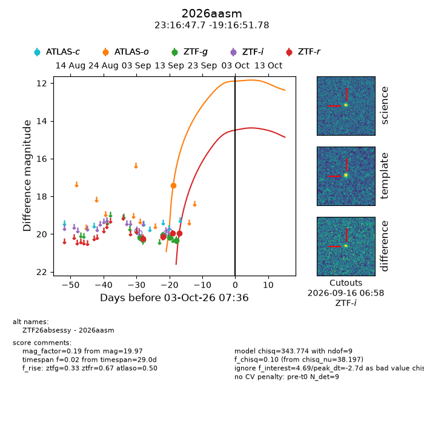
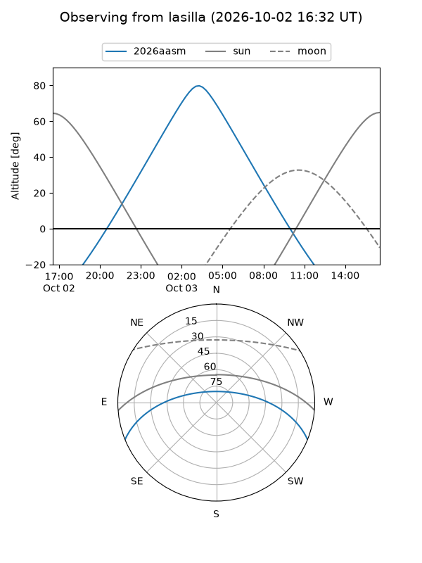
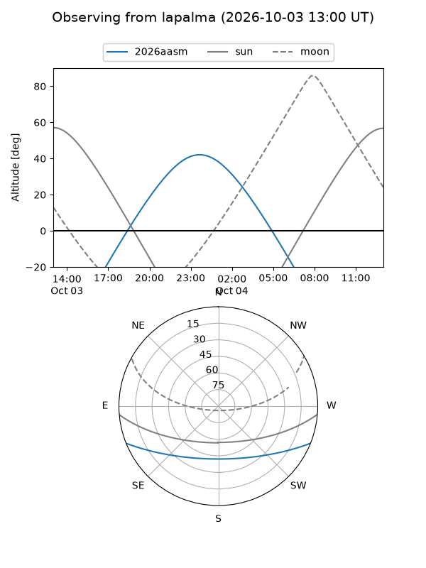
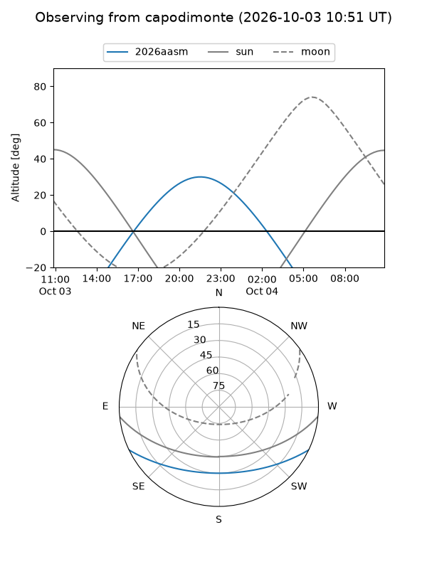
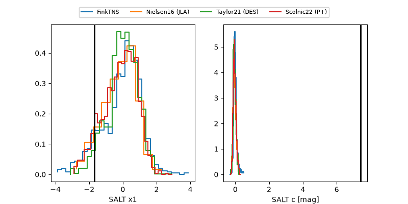

2026aasm
Target 2026aasm at 2026-10-03 17:58
Aliases and brokers:
FINK-ZTF: ztf.fink-portal.org/ZTF26absessy
Lasair-ZTF: lasair-ztf.lsst.ac.uk/objects/ZTF26absessy
ALeRCE-ZTF: alerce.online/object/ZTF26absessy
YSE-PZ: ziggy.ucolick.org/yse/transient_detail/2026aasm
TNS name: wis-tns.org/object/2026aasm
Direct TNS query: direct search
alt names
ZTF26absessy (ztf,fink_ztf)
2026aasm (tns,yse)
Coordinates:
equatorial (ra, dec) = 349.1987,-19.28105
equatorial (HMS+DMS) = 23:16:47.68,-19:16:51.78
galactic (l, b) = (47.7693,-66.92859)
Flags:
TNS type: nan
peak dt: -2.3
Photometry:
last atlaso=17.41, ztfg=20.33, ztfr=19.97
1 atlaso, 4 ztfg, 4 ztfr detections
Lightcurve

Visibility



Additional plots
